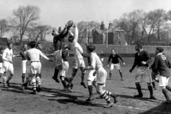
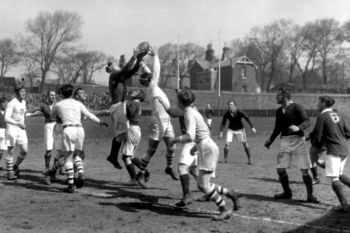

Historia del Rugby
Publicado por World Rugby:
Cuenta la leyenda que en 1823, durante un partido de fútbol en un colegio de la ciudad de Rugby, Inglaterra, (...)
 Leer másPublicado por World Rugby:
Cuenta la leyenda que en 1823, durante un partido de fútbol en un colegio de la ciudad de Rugby, Inglaterra, (...)
 Leer másSalon de la fama:
Conoce a los jugadores más destacados en la historia del rugby(...)
Leer másEL TOP 10 DEL RANKING DE WORLD RUGBY:
Las mejores selecciones a nivel rugby son (...)
 Leer más
Leer más
Este blog es dedicado a compartir todo lo relacionado con el mundo del rugby. Aquí encontrarás noticias, análisis y mucho más sobre este emocionante deporte.
¿Interesado en aprender más sobre el apasionante mundo del rugby o compartir tus ideas? No dudes en contactarme. Completa el formulario o envíame un mensaje, y estaré encantado de conversar contigo.
Formulario